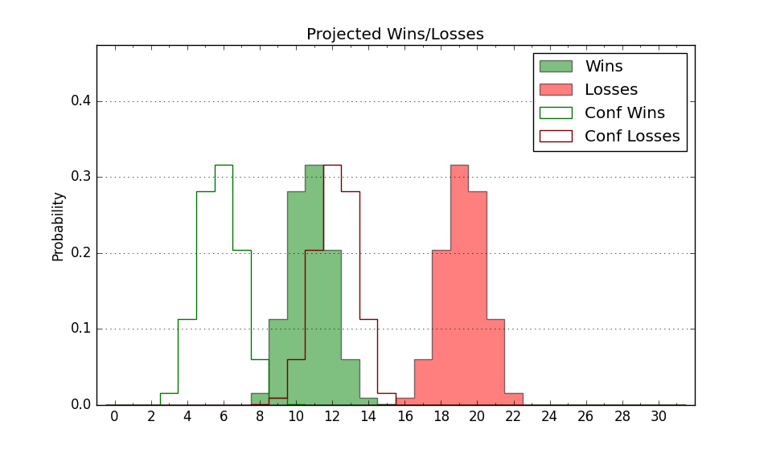

9-21 (Overall)
Net: -5.8 (229th)
Off: 104.6 (205th)
Def: 110.4 (252nd)
SoR: 0.0 (112th)
| Home | Game Probabilities | Conferences | Preseason Predictions | Odds Charts | NCAA Tournament |
| City: | Malibu, California | |
| Conference: | West Coast (9th)
| |
| Record: | 4-14 (Conf) 9-21 (Overall) | |
| Ratings: | Comp.: -5.8 (229th) Net: -5.8 (229th) Off: 104.6 (205th) Def: 110.4 (252nd) SoR: 0.0 (112th) |
| Remaining | ||||||
|---|---|---|---|---|---|---|
| Date | Opponent | Win Prob | Pred. | |||
| 3/7 | (N) Portland (272) | 61.1% | W 80-77 | |||
| Previous | Game Score | |||||
| Date | Opponent | Win Prob | Result | Off | Def | Net |
| 11/6 | Western Illinois (341) | 87.5% | W 77-64 | -6.9 | 6.9 | -0.0 |
| 11/9 | @UC San Diego (43) | 4.1% | L 76-94 | 15.2 | -10.3 | 5.0 |
| 11/16 | @UC Irvine (69) | 7.1% | L 62-80 | 4.4 | -2.8 | 1.5 |
| 11/20 | @UNLV (93) | 11.1% | L 59-80 | -2.0 | -9.7 | -11.7 |
| 11/22 | @Northwestern (53) | 5.0% | L 50-68 | -18.2 | 20.6 | 2.3 |
| 11/26 | Cal St. Fullerton (349) | 88.8% | L 63-72 | -18.7 | -20.6 | -39.2 |
| 11/29 | (N) New Mexico St. (139) | 30.7% | W 82-70 | 14.6 | 15.6 | 30.2 |
| 11/30 | (N) Weber St. (293) | 65.4% | L 53-68 | -33.7 | 7.9 | -25.8 |
| 12/7 | Grambling St. (320) | 82.9% | W 85-57 | 9.5 | 13.3 | 22.8 |
| 12/14 | Northern Arizona (240) | 68.3% | W 86-76 | 10.2 | -0.1 | 10.1 |
| 12/19 | Long Beach St. (291) | 77.7% | L 76-79 | -4.5 | -10.7 | -15.3 |
| 12/21 | UC Davis (234) | 66.6% | W 85-46 | 18.2 | 31.2 | 49.5 |
| 12/28 | @Santa Clara (51) | 4.7% | L 80-91 | 19.2 | -3.5 | 15.7 |
| 12/30 | Gonzaga (8) | 4.8% | L 82-89 | 11.4 | 11.1 | 22.5 |
| 1/2 | @Saint Mary's (20) | 2.4% | L 41-71 | -20.8 | 13.5 | -7.3 |
| 1/4 | @Pacific (273) | 46.0% | W 87-70 | 16.9 | 9.2 | 26.1 |
| 1/16 | San Francisco (65) | 20.0% | L 63-80 | -6.1 | -5.6 | -11.6 |
| 1/18 | Saint Mary's (20) | 7.7% | L 50-74 | -10.2 | -1.8 | -12.0 |
| 1/23 | @Oregon St. (76) | 8.2% | L 63-83 | 5.9 | -9.5 | -3.7 |
| 1/25 | Pacific (273) | 74.4% | W 60-44 | -28.8 | 36.2 | 7.3 |
| 1/30 | @San Diego (287) | 48.3% | W 98-90 | 12.6 | -4.8 | 7.8 |
| 2/1 | Portland (272) | 74.3% | L 64-84 | -22.1 | -20.2 | -42.3 |
| 2/8 | @Washington St. (107) | 14.4% | L 86-87 | 15.1 | 2.9 | 18.0 |
| 2/11 | Loyola Marymount (149) | 48.1% | L 60-69 | -15.3 | 2.3 | -13.0 |
| 2/13 | San Diego (287) | 76.1% | W 88-81 | 7.7 | -3.8 | 3.9 |
| 2/15 | @Gonzaga (8) | 1.5% | L 55-107 | -17.6 | -6.5 | -24.0 |
| 2/20 | Oregon St. (76) | 23.4% | L 78-84 | 13.4 | -9.1 | 4.3 |
| 2/22 | @Loyola Marymount (149) | 21.4% | L 82-93 | 22.2 | -31.1 | -8.8 |
| 2/27 | @Portland (272) | 46.0% | L 67-87 | -10.2 | -15.0 | -25.2 |
| 3/1 | Washington St. (107) | 36.4% | L 83-90 | 8.0 | -10.7 | -2.7 |
| Stats & Trends | |||||
|---|---|---|---|---|---|
| Current | Day | Week | Month | Season | |
| Composite | -5.8 | +0.0 | +0.0 | -1.5 | -0.9 |
| Comp Rank | 229 | +3 | +2 | -15 | -28 |
| Net Efficiency | -5.8 | +0.0 | +0.0 | -1.5 | -- |
| Net Rank | 229 | +3 | +2 | -15 | -- |
| Off Efficiency | 104.6 | -0.0 | +0.3 | +1.7 | -- |
| Off Rank | 205 | -3 | +2 | +16 | -- |
| Def Efficiency | 110.4 | +0.0 | -0.2 | -3.2 | -- |
| Def Rank | 252 | -- | -8 | -52 | -- |
| SoS Rank | 118 | +1 | -- | +21 | -- |
| Exp. Wins | 9.0 | -- | -0.4 | -1.3 | -3.1 |
| Exp. Conf Wins | 4.0 | -- | -0.4 | -1.3 | -2.4 |
| Conf Champ Prob | 0.0 | -- | -- | -- | -0.1 |

| Advanced Stats | ||
|---|---|---|
| Stat | Value | Rank |
| Off Eff FG % | 0.506 | 172 |
| Off Ast Ratio | 0.165 | 70 |
| Off ORB% | 0.281 | 207 |
| Off TO Rate | 0.145 | 156 |
| Off FT Ratio | 0.330 | 174 |
| Def Eff FG % | 0.518 | 200 |
| Def Ast Ratio | 0.151 | 218 |
| Def ORB% | 0.282 | 166 |
| Def TO Rate | 0.130 | 308 |
| Def FT Ratio | 0.265 | 42 |